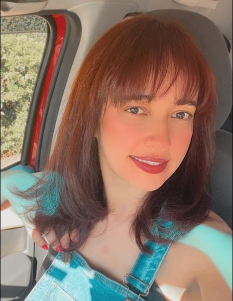
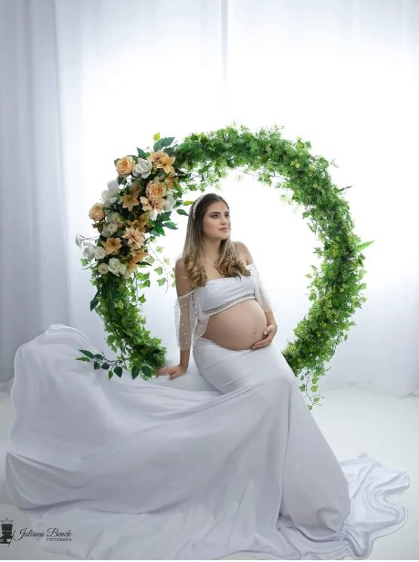
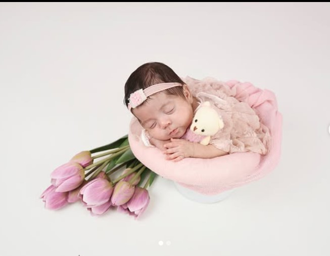

Juliana
Studio Fotográfico
Sou Juliana Fotógrafa, com mais de 6 anos de experiência atendendo Avaré e região. Ofereço um trabalho profissional e personalizado, focado em captar a essência de cada momento e transformar fotos em verdadeiras obras de arte. Meu compromisso é entregar resultados que superem as expectativas dos clientes.


